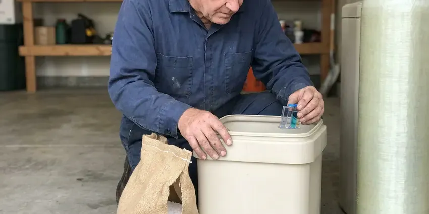
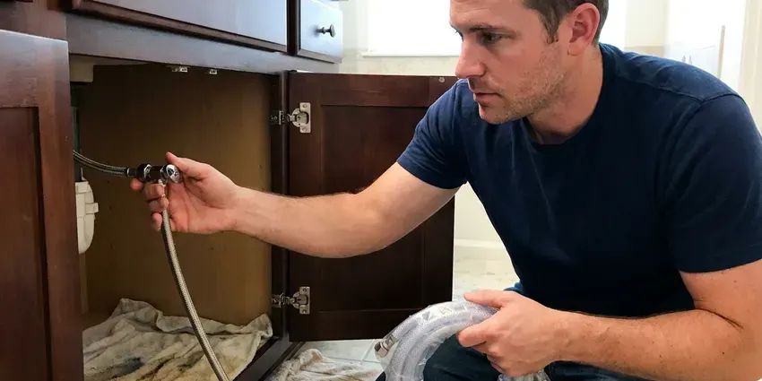
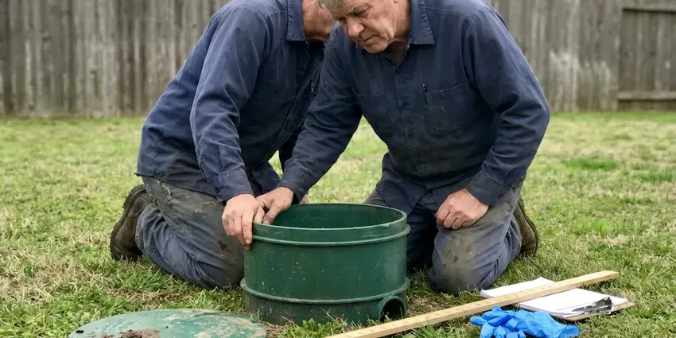
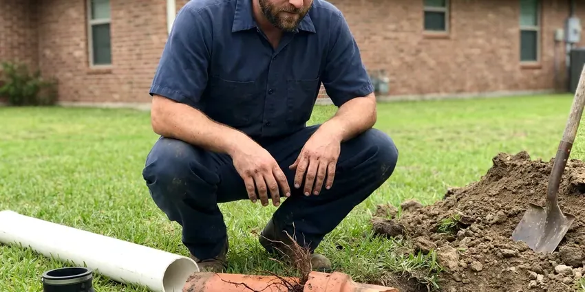

Pipe Repair in Appleton, WI
Don't let a leaky or burst pipe cause serious water damage to your Appleton, WI home. Our team provides prompt, dependable pipe repair.
- Quality Workmanship
- Guaranteed Work
- Upfront Quotes
- Honest Pricing

Need Professional Pipe Repair in Appleton, WI?
Contact HKV Plumbing now for reliable solutions to all your pipe problems, big or small.
Dependable Pipe Repair Services in Appleton, WI
At HKV Plumbing, we focus on efficient and effective pipe repair for homes and businesses in Appleton, WI. Our team uses advanced tools and techniques to identify the root cause of your pipe problems for a lasting repair. Trust us to restore your plumbing system with minimal disruption.
Our expertise includes:
- Replacing burst copper pipes
- Repairing PVC and PEX water lines
- Galvanized to PEX or copper transition repairs with dielectric unions

Additional Plumbing Repair Services in Appleton, WI
We offer expert plumbing repair services across Appleton, WI to stop leaks, clear blockages, and keep every fixture working the way it should.



Appleton water softener repair specialists

Water Leak Repair near Appleton

Appleton septic tank repair specialists

Customers
Why Choose HKV Plumbing for Pipe Repair in Appleton, WI?
Our plumbers bring copper, PEX, CPVC and transition fittings on every call. That lets us repair almost any pipe in one visit without waiting for parts.
- Fast Leak Location, Thermal imaging and moisture meters help us find the leak without opening extra walls.
- Advanced Tools, We use modern leak detection and pipe inspection equipment for precise diagnostics.
- Local Expertise, We know how Wisconsin soil conditions and temperature swings affect plumbing systems.
Citywide Coverage
HKV Plumbing is proud to serve every neighborhood and community within Appleton, WI. No matter where you are located in the area, our team can promptly dispatch a plumber to address your pipe repair needs. We are familiar with the various housing styles and plumbing systems found across the city.
Experienced Team
The HKV Plumbing team has extensive knowledge of local plumbing codes and common pipe materials used in Appleton, WI homes. You can trust our technicians to perform repairs that are not only effective but also compliant with all code requirements.
Safety-First Approach
When we perform pipe repair, we focus on not just the fix, but the long-term safety of your property. Our technicians make sure all work is up to code, using proper materials and installation methods to prevent future problems and protect your investment in Appleton, WI.
Trusted Certified Appleton Plumbing Services Professionals
At HKV Plumbing, we take pride in providing certified plumbing services throughout Appleton, WI. Backed by leading industry credentials, our experienced plumbers combine technical skill with genuine customer care. Whether it is repair, installation, or maintenance, we follow strict safety and quality standards to deliver long-lasting results you can trust.
Call Us Now PHCC Plumbing Contractor Recognition
PHCC Plumbing Contractor Recognition Better Business Bureau (BBB) Accreditation
Better Business Bureau (BBB) Accreditation Angi Certified Pro
Angi Certified Pro ISO 9001 Quality Management Certification
ISO 9001 Quality Management CertificationTrusted Pipe Repair Services in Appleton, WI
Galvanized Pipe Replacement in Appleton
Many older homes in Appleton, WI still have galvanized steel pipes, which are prone to corrosion, rust and reduced water pressure over time. HKV Plumbing focuses on replacing these outdated pipes with modern, more durable materials like copper or PEX. This upgrade eliminates recurring leaks and rust-colored water and significantly improves water flow and quality throughout your home. We handle the entire process, from initial assessment to complete repiping, with minimal disruption.

Emergency Pipe Repair in Appleton, WI
Plumbing emergencies, like a major pipe burst or severe leak, don't wait for business hours. That's why HKV Plumbing offers emergency pipe repair services throughout Appleton, WI. Our plumbers are on call to respond fast, limit damage and perform urgent repairs to restore your plumbing system and peace of mind. We understand the stress these situations cause and work to provide immediate, effective solutions.
Underground Pipe Repair in Appleton
Pipes buried underground in Appleton are susceptible to damage from soil shifting, tree root intrusion and heavy vehicle traffic. Our underground pipe repair services include precise excavation and trenchless repair options like pipe bursting or pipe lining. We identify the exact problem area, whether it's a sewer line or water main, and use the most efficient and least disruptive repair method to restore function without extensive yard damage.
Leaky Pipe Repair in Appleton, WI
Even a small leak can lead to mold growth, wood rot and higher water bills over time. HKV Plumbing provides precise leaky pipe repair services for all types of plumbing systems in Appleton. We use modern leak detection equipment, including acoustic sensors and thermal imaging, to pinpoint the exact source of the leak without unnecessary demolition. Once located, we offer targeted repairs, from patching minor pinhole leaks to replacing corroded sections of pipe, for a watertight seal and long-term reliability.
Corroded Pipe Replacement in Appleton
Older homes in Appleton often have galvanized steel or aging copper pipes that are prone to corrosion, leading to discolored water, low water pressure and frequent leaks. HKV Plumbing provides full corroded pipe replacement services. We can replace problem sections or re-pipe your entire home with modern, durable materials like PEX or new copper, significantly improving water quality and system longevity. We keep disruption to a minimum during the replacement process.
Pipe Leak Detection in Appleton, WI
Before any repair can happen, the leak needs to be found. HKV Plumbing offers advanced pipe leak detection services in Appleton, WI using non-invasive techniques. We use specialized equipment such as electronic listening devices, thermal cameras and inert gas tracers to accurately locate hidden leaks behind walls, under concrete slabs or underground. Our precise detection methods save you time and money by avoiding unnecessary demolition.
Slab Leak Pipe Repair in Appleton, WI
Slab leaks are particularly challenging when the soil under a home shifts and stresses the pipes below it. Glacial soils in Wisconsin range from heavy clay to sand and gravel, which affects how water moves around foundations and buried lines. Our plumbers are experts in diagnosing and repairing slab leaks beneath your home's concrete foundation. We use non-invasive methods like electronic leak detection to find the exact location, then offer solutions such as direct access repair, rerouting the line or trenchless techniques to fix the pipe with minimal impact on your home.

PEX Pipe Repair and Installation in Appleton
PEX piping is a popular, flexible and freeze-resistant alternative to traditional copper or PVC, often used in newer construction and remodels in Appleton. Our team is proficient in PEX pipe repair, addressing crimp failures or accidental punctures. We also specialize in PEX pipe installation, a reliable, corrosion-resistant and cost-effective solution for re-piping projects that delivers a leak-free plumbing system for years to come.
Pipe Repair Near Me in Appleton, WI
Looking for dependable pipe repair near me in Appleton, WI? HKV Plumbing is your local expert, always ready to deliver prompt and professional service. We're committed to serving our community with high-quality plumbing solutions.
At HKV Plumbing, we pride ourselves on being the go-to local plumbing service for all pipe repair needs across Appleton, WI. Our commitment to quick response times and quality workmanship has made us a trusted name in the community. You can count on our experienced technicians to provide lasting solutions that meet your needs.
HKV Plumbing at a Glance
- Licensed and insured plumbers serving Appleton, WI
- 24/7 emergency service with same-day scheduling
- Clear written estimates, no hidden fees
- 4.8-star rated by 448+ Wisconsin customers
Appleton Map
Appleton Information
- Population
- 74,719
- Area codes
- 920/715/414
- Service area
- Appleton and communities within 40 miles
- Nearby
- Oshkosh, Green Bay, Sheboygan, Wausau
Pipes in Appleton homes can wear from mineral-rich water and from cold snaps, which makes prompt pipe repair essential for protecting your property. Hard water is common across much of Wisconsin, especially where supply comes from groundwater moving through limestone and dolomite. Frozen pipes are a regular winter risk in Wisconsin, and deep frost can even reach water service lines buried underground.
Expert Services
Trust our professionals for reliable HKV Plumbing solutions in Appleton, WI.
Our Specialized Plumbing Services in Appleton, WI
At HKV Plumbing, we provide a complete range of plumbing services across Appleton, WI. From leak detection to full system installations, our team ensures fast, precise, and affordable service for both residential and commercial properties. Explore our core services below:


How Our Pipe Repair Service Process Works in Appleton, WI
We follow a clear, step-by-step approach so every pipe repair in Appleton, WI is handled with precision and care.
Request a Quote
Call (414) 432-4641 and describe the leak or damage, and we will help you shut off the water if needed. We schedule a plumber as soon as we can.
Locate and Assess
We find the leak with moisture and thermal tools and identify the pipe material and cause. You receive a clear repair plan and quote.
Repair and Pressure Test
We make the repair with code-approved materials and pressure test the line. We clean up and let you know if any drywall or flooring needs attention.
Frequently Asked Questions About Pipe Repair in Appleton
The cost of pipe repair in Appleton, WI can vary widely depending on the type of pipe, the extent of the damage and its location. Minor leak repairs might range from $150 to $450, while a burst pipe requiring significant access or replacement could cost between $500 and $2,000 or more. We provide a detailed, upfront quote after a full inspection.
HKV Plumbing repairs all common types of residential and commercial piping found in Appleton, WI, including copper, PEX, PVC, CPVC and galvanized steel. Our plumbers are trained and equipped to work with each material effectively.
Preventive measures include insulating pipes in unheated areas, maintaining proper water pressure, addressing hard water issues that can lead to mineral buildup and regular plumbing inspections. For homes in Wisconsin, maintaining proper drainage around foundations can also prevent soil shifts that damage underground pipes.
Most pipe repairs take one to three hours. Repairs requiring wall or ceiling access may take longer, and drywall repair is usually a separate step after the plumbing is done.
Homeowner policies often cover sudden water damage from a burst pipe, but not the cost of fixing worn or corroded pipe. Check your policy, and we will provide documentation to support any claim.
Yes, HKV Plumbing stands behind the quality of our work. We offer warranties on our pipe repair services and the parts we install. The specific terms of the warranty will be detailed in your service agreement, giving you confidence and peace of mind in our repairs.
A repair clamp or push-fit coupling can stop a leak temporarily in an emergency. For a permanent fix, especially inside walls, a licensed plumber should replace the damaged section with approved fittings.
To prevent future pipe problems, consider insulating exposed pipes, especially before winter. Avoid pouring grease down drains, be mindful of what you flush and address minor leaks quickly. Regular plumbing inspections can also catch potential issues early, such as signs of corrosion or minor root intrusion, before they escalate.
What People Are Saying About Our Plumbing Experts?

Robert G.
The trenchless sewer replacement saved our front yard. They walked us through the camera inspection footage first so we knew exactly what we were paying for.
Sewer Line Replacement · Sheboygan, WIJames P.
Our commercial plumbing system had a leak under the sink, and HKV Plumbing handled it professionally. The plumbers arrived quickly and restored everything without disruption to our customers.
Commercial Plumbing · Appleton, WI
Mark T.
When our office needed drain cleaning, HKV Plumbing provided quick, reliable service. The plumber arrived on time and made sure every drain flowed perfectly before leaving. Very satisfied.
Drain Cleaning · Sheboygan, WI
Daniel K.
A pipe burst at 11 pm and they actually answered. The plumber showed up within the hour, shut everything down, and had us back to normal the next morning. Could not ask for more.
Emergency Plumbing · Appleton, WI
Laura S.
I scheduled a water heater replacement, and the team made the process smooth and affordable. The new unit works perfectly, and they cleaned up after completing the job.
Water Heater Replacement · Milwaukee, WI
Emily R.
I called HKV Plumbing for plumbing repair, and the technician was fast, polite, and thorough. They explained the problem clearly and fixed it the same day. I will definitely hire them again. Highly recommended!
Plumbing Repair · Milwaukee, WI